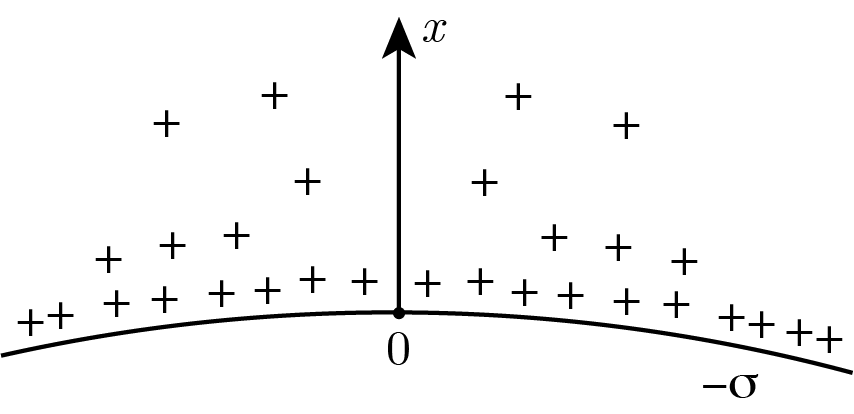
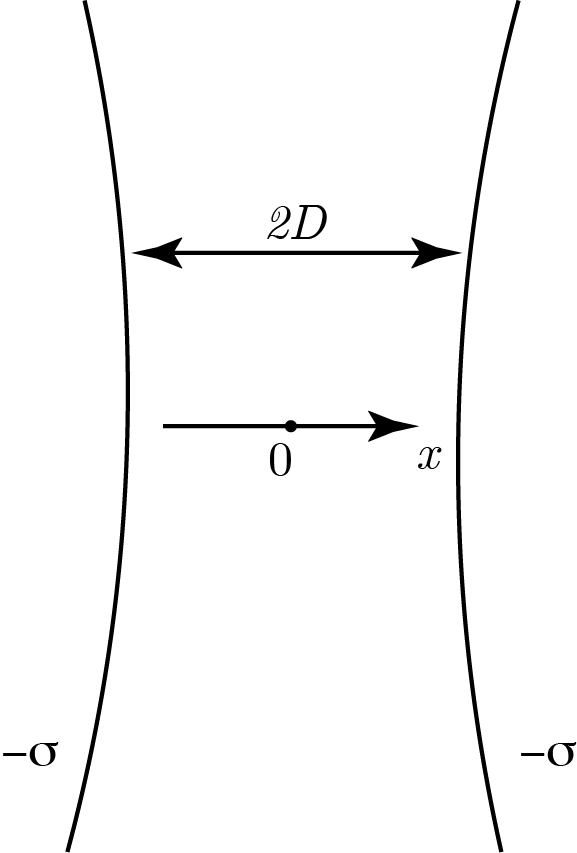

Y22 (2022) — English translation
Electrical interactions play an important role in living organisms. If you place an acid molecule, such as DNA, in water, some of the weakly bound atoms may dissociate. Positive ions will leave the molecule, thereby making it negatively charged. In the same way, cell membranes in water will be negatively charged, and the electrostatic repulsion between them prevents macromolecules, membranes and cells from “sticking together.” Since the substance as a whole is electrically neutral, a large number of positive ions in the solution will cause the force of interaction between the membranes to weaken with distance. When solving the problem, assume that the temperature is everywhere equal to room temperature $T$. The cell membrane can be considered a uniformly charged sphere with a surface charge density $(-\sigma)$. The membrane contains the neutral contents of the cell. The membrane is surrounded by a solution with dielectric constant $\varepsilon$. Positive ions float in a thin layer of this solution near the outer surface of the membrane. Let us consider a fragment of the membrane and the adjacent layer. In this region, consider the membrane field to be uniform. Let us direct the $x$ axis with its origin on the membrane perpendicular to it (see figure). The system is in thermal equilibrium with the environment. Due to electrostatic interaction, the density of positive ions in the solution is not uniform, but each part can be considered to be locally in equilibrium. The behavior of positive ions in this case is similar to the behavior of molecules in the atmosphere with the only exception that the positive ions are affected by an electric field, and the molecules of the atmosphere are affected by a gravitational field. Let us take the concentration of positive ions $n_0$ near the surface of the membrane as an indefinite constant. Electron charge $-e$, positive ion charge $+e$, Boltzmann constant $k$, electric constant $\varepsilon_0$. Do not take into account gravity and the viscosity of water.

The potential on the surface of the cellular membrane is chosen equal to zero.
Under certain conditions, the solution to the differential equation obtained in step $\textbf{A1}$, satisfying the boundary conditions obtained in step $\textbf{A2}$, can be represented as a logarithmic function: $\varphi(x)=A_1\ln(1+B_1x)$.
Let us now consider a situation where two cells are located close to each other. A simplified model looks like this: two identical large spherical surfaces are located so that the gap between them is equal to $2D$, and the gap value is much less than the radius of curvature of the surfaces. Both membranes are uniformly charged with a charge with surface density $-\sigma$. We choose the middle of the gap as the origin of coordinates, direct the $x$ axis perpendicular to the membranes, and take the potential at the origin equal to zero. Let us again take the concentration of positive ions $n_0$ at $x=0$ as an indefinite constant. The dependence of the potential on the coordinate can be sought in the form $\varphi(x)=A_2\ln\left[\cos(B_2x)\right]$.
Let us now consider a situation where two cells are located close to each other. A simplified model looks like this: two identical large spherical surfaces are located so that the gap between them is equal to $2D$, and the gap size is much less than the radius of curvature of the surfaces. Both membranes are uniformly charged with a charge with surface density $-\sigma$. We choose the middle of the gap as the origin of coordinates, direct the $x$ axis perpendicular to the membranes, and take the potential at the origin equal to zero. Let us again take the concentration of positive ions $n_0$ at $x=0$ as an indefinite constant. The dependence of the potential on the coordinate can be sought in the form $\varphi(x)=A_2\ln\left[\cos(B_2x)\right]$.

Source: https://pho.rs/p/2848